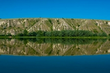
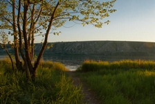
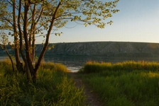

Природный парк «Донской» - это территория, гармонично сочетающая разнообразие и контрастность
природных условий с богатым наследием материальной и духовной культуры народов, издавна населявших эти земли.
Располагаясь на стыке двух природных зон (степей и полупустынь), территория парка отличается чрезвычайным природным
разнообразием, контрастностью и живописностью ландшафтов.
Природный парк находится в стороне от трассы М6 Каспий, однако - это одно из уникальных мест Волгоградской области,
которое Вы можете посетить.

Природный парк «Донской»
Описание
Река Дон
Главная ценность парка – сам Дон с его рыбными омутами, чистыми плесами, золотыми пляжами.
Любителей рыбалки здесь ожидают незабываемые впечатления. Тихие, поросшие камышом заводи, старицы и пойменные озёра
идеальные места для любителей поплавочной снасти. Глубокие омуты и обрывистые берега дают надежду на трофейный
экземпляр сома и сазана.
В парке для путешественников предусмотрен целый ряд «зеленых стоянок»,
где все приспособлено для рыбалки, имеются необходимые рыболовные принадлежности, лодки.
Кроме того, построены уютные беседки, оборудованы места для приготовления ухи или шашлыка.
Разнообразие природы парка
На сравнительно небольшой территории парка удивительно сочетаются огромные меловые горы,
прорезанные глубокими оврагами-каньонами, с обширными массивами типчаково-ковыльных степей, заливных лугов,
пойменных и нагорных лесов.
Многообразие ландшафтов и природных экосистем обусловило большое разнообразие флоры и фауны.
Природный парк «Донской» служит важным ареалом для многих редких видов растений, животных и рыб,
занесенных в национальную и региональную Красные книги.
Фотографии

 

Расположение
 )
)
Расположение природного парка «Донской» на интерактивной карте
Природный парк Донской находится в Иловлинском районе Волгоградской области.
Ориентиром служит поворот на Качалино (направо, если едите с московского направления).
После поворота нужно ехать все время по главной дороге до поворота на санаторий Качалинский (направо).
Далее дорога пойдет до переправы через дон на Трехостровскую.
Дополнительная информация
Природный парк Донской занимает огромную территорию.
Интересных мест для туризма и отдыха на его территории много.
Поэтому для более подробного знакомства, советую Вам посетить официальный сайт природного парка Донской.
У переправы на Трехостровскую находятся разнообразные туристические базы и кемпинги,
в которых можно приятно отдохнуть на берегу Дона после длинной дороги.